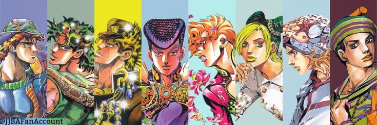

En connaître plus sur l'anime JoJo's Bizzare Adventure
Ce site est là pour que tu puisse en connaître plus sur Jojo's Bizzare Adventure. JoJo's Bizarre Adventure (ジョジョの奇妙な冒険, JoJo no kimyō na bōken) est un manga de Hirohiko Araki. Il est prépublié entre 1986 et 2004 dans l'hebdomadaire Weekly Shōnen Jump, puis depuis 2005 dans le magazine mensuel Ultra Jump. La version française est initialement publiée par J'ai lu de 2002 à 2005, puis par les éditions Tonkam depuis 2007.
Pour plus de détails: 